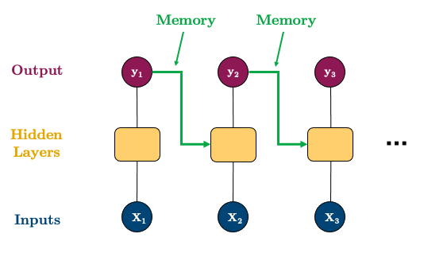
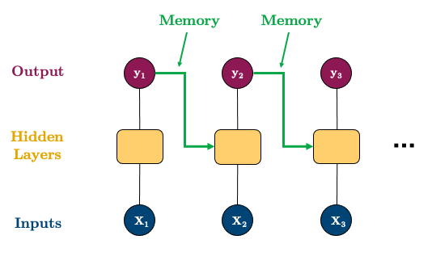
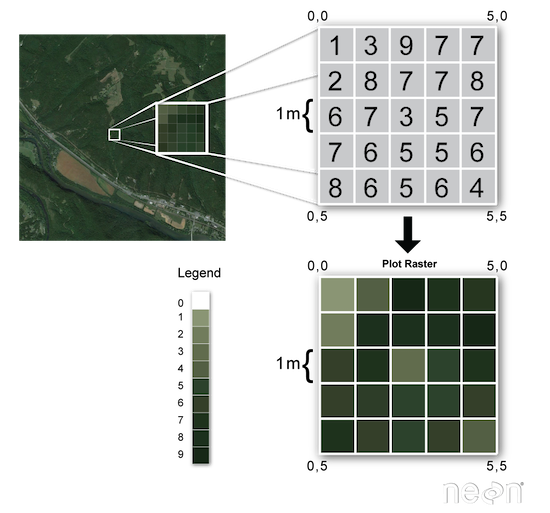
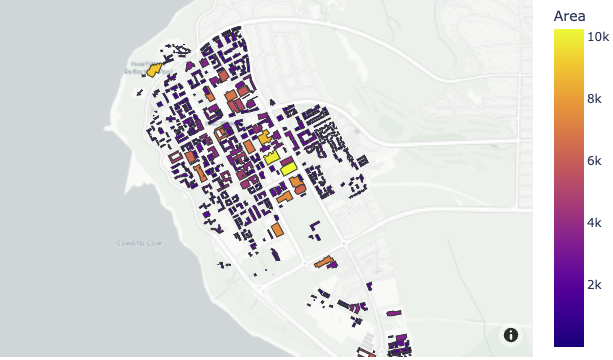
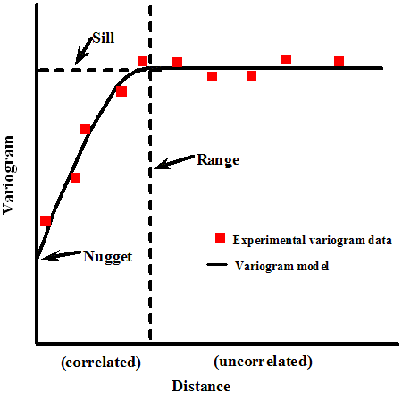

Quiz 2 - 574
Probabilistic Forecasting
- We have been dealing with point forecasts (modelling averages)
- Want to estimate the uncertainty of our forecasts
- or the extreme (e.g. 90% or 95% quantiles)
- example: find upper quantile of electricity demand so that we can plan for the maximum demand
- or predict the variance of the forecast (how volatile a metric will be in the future)
- or the extreme (e.g. 90% or 95% quantiles)
Analytical
- Assume distribution of forecasts are normal
\[ \hat{y}_{T+h|T} \pm c \hat{\sigma}_{h} \]
- \(\hat{\sigma}_{h}\) is the standard deviation of the forecast
- \(c\): coverage factor (e.g. 1.96 for 95% confidence interval)
\[ \hat{\sigma}_{h} = \sqrt{\frac{1}{T-K}\sum_{t=1}^{T} e_{t}^{2}} \]
Focus is finding \(\hat{\sigma}_{h}\)
- \(K\): number of parameters
- \(T\): total length of time series
- \(e_{t} = y_{t} - \hat{y}_{t|t-1}\)
Methods that have been derived mathematically:
Method Forecast sd Mean \(\hat{\sigma}_{h} = \hat{\sigma_1} \sqrt{1 + \frac{h}{T}}\) Naive \(\hat{\sigma}_{h} = \hat{\sigma_1} \sqrt{h}\) Seasonal Naive $_{h} = $ Drift \(\hat{\sigma}_{h} = \hat{\sigma_1} \sqrt{h(1+\frac{h}{T})}\) Recall: \(h\) is the forecast horizon (steps ahead), \(m\) is the seasonal period

Simulation and Bootstrapping
- Assume future errors will be similar to past errors
- Draw from the distribution of past errors to simulate future errors
\[y_{T+h} = \hat{y}_{T+h|T} + \epsilon_{T+h}\]
Quantile Regression
- Wish to predict particular quantile instead of mean
- e.g \(q=0.9\) so we expect 90% of the future values to be below the forecast
- Pinball loss/ Quantile loss: \[ \mathcal{L}= \left\{ \begin{array}{ll} (1-q)(\hat{y}_{t,q}-y_t) \text{,} \;\; \text{ if } y_t < \hat{y}_{t,q} \\ q(y_t-\hat{y}_{t,q}) \text{,} \;\;\;\;\;\;\;\;\;\; \text{ if } y_t \ge \hat{y}_{t,q} \\ \end{array} \right. \]
| High Quantile | Low Quantile |
|---|---|
| Higher penalty for predicting OVER | Higher penalty for predicting UNDER |
Quantile Regression in PyTorch
see here
Quantile loss is not currently a supported criterion in pytorch but it’s easy to define ourselves. We really have two options:
- Train a network for each quantile we want to predict; or
- Train a network to output multiple quantiles at once
Evaluating Distributional Forecast Accuracy
There are 4 main sources of uncertainty:
- Random error term
- Uncertainty in model parameter estimates
- Uncertainty in model selection
- Uncertainty about consistency of data generating process in the future
Most methods only consider the first source of uncertainty
Simulation tries to consider 2 and 3
4 is practically impossible to consider
Anomaly Detection
- Outliers are observations that are significantly different from the rest of the data
- Can be due to measurement error, data entry error, or just unique observations
Rolling Median
- Methodology:
- Subtract the rolling median from data (with suitable window size)
- Calculate standard deviation of the residuals (\(\hat{\sigma_r}\))
- Assume normally distributed residuals then identify outliers as outside the 95% confidence interval (\(\pm 1.96 \hat{\sigma_r}\))
STL Decomposition
- Methodology:
- Decompose time series to find residuals:
- Non-seasonal data: use LOESS
- Seasonal data: use STL (Seasonal-Trend decomposition using LOESS)
- Calculate \(q_{0.1}\) and \(q_{0.9}\) of the residuals
- Identify outliers as \(\pm2 \times (q_{0.9} - q_{0.1})\)
- Decompose time series to find residuals:
Model-based
- Methodology:
- Fit a model to the data
- Identify outliers as significant deviations from model predictions (e.g. 95% confidence interval)
ML approaches
- Train an ML model to predict outliers
- A few common packages: pyod, sklearn, luminaire, sklyline, etc.
Isolation Forest
- Built on basis of decision trees
- High-level idea:
- randomly select a feature
- randomly splits that feature into 2 values
- repeat until all data points are isolated
- Less splits to isolate a data point = more likely to be an outlier
- Score = [0, 1] where 1 is an outlier, > 0.5 are normal observations.

K-NN
- For each data point, calculate the distance to its k-th nearest neighbor
- Large distance = outlier
- Supports 3 kNN detectors:
- Largest: distance to the k-th neighbor
- Mean: average distance to k neighbors
- Median: median distance to k neighbors
- pyod’s
KNN()outlier detection
Global vs Local Outliers
Global outliers: A data point with its value is far outside of the entirety of the data set (e.g., billionaires)
Local/Contextual outliers: A data point is considered a contextual outlier if its value significantly deviates from the rest the data points in the same context. (e.g., earning 50K income in a developing countries)
Imputation
- Imputation: Filling in missing values/ outliers in a dataset
- Overarching techniques:
- Remove (
.dropna()) - Fill manually based on some expert-interpreted values (
.fillna()) - Fill with mean/median/mode (
.fillna()) - Fill based on rolling statistic, e.g. rolling mean/median
- Polynomial interpolation
- Fill based on temporal dependence
- i.e. use same value from the same period last season, or average of all periods in the past season
- Fill with model fitted values
- Use
MICE(Multiple Imputation by Chained Equations) fromstatsmodelsorIterativeImputerfromsklearn.
- Remove (
Deep Learning with Time Series
Classical time series (ARIMA, Exponential Smoothing) limitations:
- They are linear models
- Inputs must be specified, not learned automatically
- Focus on univariate time series (lack support for multivariate time series)
- Focus on regression (lack support for classification)
- Assumes complete, non-missing data
Deep learning models can address these limitations, as NNs are:
- robust to noise
- can learn complex, non-linear relationships
- support multivariate time series
- feature learning (learn the inputs)
- temporal dependencies can be learned
Neural Networks
- NN allows us so that the features do not need to be ordered
- e.g. target, lag1. lag2, lag3 is the same as lag2, lag3, target, lag1
- Need to take into account inherent temporal dependencies (approach above does not)
- Do something similar like CNN (retain spatial information) but for time series
Convolutional Neural Networks (CNN)
- Can work with 3D data (channels, height, width)
- Can also do 2D data (features, time)
- Use
Conv1Dfrompytorchto work with time series data- Looks at local groups of data (filter of some size)
- Missing memory (does not remember previous values, only looks at local groups of data)
- can be solved with RNN

Image with sequence of 20 values, filtered with 4 kernels of size 3
- Then make CNN with optimizer
Adamand loss functionMSE
Recurrent Neural Networks (RNN)
Reasonable results with CNN because preserve structure of data
Structure: - Split up and process one time-step at a time
 
Great video on RNNs
Draw back: Vanishing Gradient Problem
- Gradient becomes so small that it does not update the weights
- Early time steps are not updated (long-term dependencies are not learned), they “forget”
- Can be solved with LSTM and GRU
Long Short-Term Memory (LSTM)

All the yellow boxes (LSTM cells) are identical (same weights and architecture)
Components:
- Cell State: The horizontal line running through the top of the diagram
- It runs straight down the entire chain, with only some minor linear interactions
- Forget Gate: Decides what information to throw away from the cell state
- Input Gate: Decides what new information to store in the cell state
- Output Gate: Decides what to output based on the cell state
- Cell State: The horizontal line running through the top of the diagram
GRU is similar to LSTM, but has less parameters and is faster to train
Useful Time Series Packages
- Prophet: Facebook’s time series forecasting package
- GluonTS: alternative to pytorch.
- PyTorch Forecasting: built on top of pytorch, but with more focus on time series forecasting.
- sktime: scikit-learn for time series data.
- Tidyverts: R package for time series forecasting.
Additional Topics
- Heirarchical Time Series: Forecasting at different levels of aggregation (e.g. product sales at store level, then at regional level, then at national level)
- Bottom-up: Forecast at the lowest level and aggregate up
- Top-down: Forecast at the highest level and disaggregate down
- Multiple Seasonalities: e.g. daily and weekly seasonality
- decompose independently
- decompose simultaneously (e.g. propher/ statsmodels)
- Multivariate Time Series: e.g. sales and advertising spend
- VAR (Vector Auto Regression)
- LSTM with multiple inputs
- Explanatory variables:
- easy to add features to ML models
- ARIMA can but using
exogparameter
- Time Series Classification:
- Hidden Markov Models
Spatial Data
- Data with location information (Has spacial dependence)
- Main Tasks: Wrangling, Visualization, Modelling
- Representation: Vector, Raster
Working with Vector Data
- Collection of discrete locations/ vertices
(x, y)to form:- Points: single location
- Lines: series of points
- Polygons: series of lines (closed shape)
- Stored in
.shp(shapefile) format.shp: geometry.shx: index (how geometry relates to one another).dbf: attributes (e.g. population, area)
Geopandas Intro
- To read and write vector data
- Built off of
pandasandshapely - Similar to
pandasit has:GeoSeries: series of geometriesGeoDataFrame: dataframe with geometry column- Geometry column contains vector data
Loading from OpenStreetMap
- It is like the wikipedia of geospacial data
- Use
osmnxto get data from OpenStreetMap
import osmnx as ox
vancouver = ox.geocode_to_gdf("Vancouver, Canada")
vancouver.plot(edgecolor="0.2")
# get higher resolution
van_bc = gpd.clip(bc, vancouver)
# Plot stanley park in vancouver
stanley_park = ox.geocode_to_gdf("Stanley Park, Vancouver")
ax = van_bc.plot(edgecolor="0.2")
stanley_park.plot(ax=ax, edgecolor="0.2", color="tomato")
Wrangling with Geopandas
- Add width to line:
gdf.buffer(2)to add a 2m to left and right of the line (4m total) - Get Length of line:
gdf.length.sum()to get the length of the line- Need to convert to linear meters first
- Get Area of polygon:
gdf.area.sum()to get the area of the polygon- Need to convert to linear meters first
- Joining:
gpd.sjoin(gdf1, gdf2, how=‘left’, predicate=‘intersects’)how: left, right, inner, outerpredicate: intersects, contains, within, touches, crosses, overlaps
- Grouping:
gdf.groupby(by=‘column’).sum().sort_values("length", ascending=False)
Working with Raster Data

- Each pixel has 4 bands: Red, Green, Blue, and Infrared
- Resolution: size of each pixel (e.g. 1m x 1m)
- smaller resolution = more detailed
- Most common format: GeoTIFF (
.tif) - Use Python library
rasterioto read and write raster data
Coordinate Reference Systems (CRS)
- Typically identified by EPSG (European Petroleum Survey Group) code
- Common CRS:
- Angular units (latitude and longitude):
EPSG:4326 - Linear units (meters): Most common is UTM which is divided into zones. For British Columbia, it’s
EPSG:32610 - Minimize distortion by choosing the right CRS, for Canada, it’s
EPSG:3347(“Lambert projection”)
- Angular units (latitude and longitude):
- Change code in geopandas:
gdf.to_crs(“EPSG:3347”)
Spatial Visualization
Geopandas Plotting
- Easy to use and quick
- Get data of UBC buildings from
osmnx
import osmnx as ox
import geopandas as gpd
ubc = (ox.features.features_from_place("University of British Columbia, Canada",
tags={'building':True}) # Just keep building footprints
...
)- Get the building footprint of a specific building from its coordinates
point_coord = Point(-123.25203756532703,49.26314716306668)
ubc[ubc.contains(point_office)] # get the building that contains the point
ubc.loc[47, "Label"] = "Earth Science Building" # change the label- Add map to the background
import contextily as cx
ax = (ubc.to_crs("EPSG:3857")
.plot(figsize=(10, 8), column="Label", legend=True,
edgecolor="0.2", markersize=200, cmap="rainbow")
)
cx.add_basemap(ax, source=cx.providers.OpenStreetMap.Mapnik) # I'm using OSM as the source. See all provides with ctx.providers
plt.axis("off")
plt.title("UBC");Plotly Express
- To add interactivity to the map
- Backed by MapBox (mapping and location data cloud platform)
import plotly.express as px
# Calculate area
ubc["Area"] = ubc.to_crs(epsg=3347).area # (https://epsg.io/3347)
# Make plot
fig = px.choropleth_mapbox(ubc,
geojson=ubc.geometry,
locations=ubc.index,
color="Area",
center={"lat": 49.261, "lon": -123.246},
zoom=12.5,
mapbox_style="carto-positron")
fig.update_layout(margin=dict(l=0, r=0, t=30, b=10))
Kepler.gl
- Web-based geospatial analysis tool
- Even more powerful than Plotly Express
- How it works:
- Create instance of map with
keplergl.KeplerGl() - Add as much data with
.add_data()method - Customize and configure the map using GUI
- Create instance of map with
from keplergl import KeplerGl
ubc_map = keplergl.KeplerGl(height=500)
ubc_map.add_data(data=ubc.copy(), name="Building heights")
ubc_map- Can also make a 3d map with building heights
- Load the building heights data
- Join the data with the building footprints
- Plot the 3d map + addjust the GUI settings
Spatial Modeling

Source: https://www.neonscience.org/resources/learning-hub/tutorials/spatial-interpolation-basics
- Two common ways to model spatial data:
- Spatial interpolation: use a set of observations in space to estimate the value of a spatial field
- Areal interpolation: project data from one set of polygons to another set of polygons
- “everything is related to everything else, but near things are more related than distant things” (Tobler, 1970)
Deterministic Interpolation
Use
scipymoduleinterpolateto do deterministic interpolationCommon Techniques:
- Inverse Distance Weighting (IDW): estimate the value of a point based on the values of its neighbours (farther neighbours have less weight)
\[\hat{z}(x) = \frac{\sum_{i=1}^{n} w_i(x)z_i}{\sum_{i=1}^{n} w_i(x)}\]
where \(w_i(x) = \frac{1}{d_i(x)^p}\), \(d_i(x)\) is the distance between \(x\) and \(i\), and \(p\) is the power parameter
- Nearest Neighbour: estimate the value of a point based on the value of the nearest point (does not consider weights)
- Less smooth than IDW (more jagged)
- Polynomial Interpolation: estimate the value of a point based on the values of its neighbours using a polynomial function
- Radial Basis Function: estimate the value of a point based on the values of its neighbours using a radial basis function
Probabilistic Interpolation
- Kriging differs from deterministic because we interpolate using statistical models that include estimates of spatial autocorrelation
\[\hat{Z}(s_0) = \sum_{i=1}^{n} \lambda_i Z(s_i)\]
- \(\lambda_i\) are the weights
- \(Z(s_i)\) are observations at locations \(s_i\)
- \(N\) is the size of \(s\) (number of observations)
- Kriging uses spatial autocorrelation to estimate the weights
- Looking at the variance between points to estimate the weights
Variogram
- Defines the spatial variance/ autocorrelation between points (as a function of distance)
- Similar to ACF but for spatial data
- Used to estimate the weights in kriging
- e.g. of a function: \(\gamma(s_i, s_j) = \frac{1}{2}(Z(s_i) - Z(s_j))^2\)
- semi-variance because of a factor of 1/2
- Each pair is calculated twice
- Plot this function to get the variogram (x-axis: distance, y-axis: semivariance)
 
- Nugget: variance at distance 0
- Ideally should be 0 (no variance at distance 0), higher nugget = more noise
- Can be thought of as Random error/ measurement error
- Sill: maximum variance of spatial process
- represents the amount of spatial autocorrelation that exists at large enough distances to capture the underlying trend of the process
- Range: where the semivariance reaches the sill
Kriging with pykrige
from pykrige.ok import OrdinaryKriging
RESOLUTION = 250 # m
# 1. Convert to meter-based
van_listings_gdf = van_listings_gdf.to_crs("EPSG:3347")
# 2. Add Easting and Northing columns
van_listings_gdf["Easting"] = van_listings_gdf.geometry.x
van_listings_gdf["Northing"] = van_listings_gdf.geometry.y
# 3. Create a grid of points
gridx = np.arange(van_listings_gdf.bounds.minx.min(), van_listings_gdf.bounds.maxx.max(), RESOLUTION)
gridy = np.arange(an_listings_gdf.bounds.miny.min(), van_listings_gdf.bounds.maxy.max(), RESOLUTION)
# 4. Kriging
krig = OrdinaryKriging(
x=van_listings_gdf["Easting"],
y=van_listings_gdf["Northing"],
z=van_listings_gdf["price"],
variogram_model="spherical")
# 5. Execute and plot
z, ss = krig.execute("grid", gridx, gridy)
plt.imshow(z)Areal Interpolation
- Project data from one set of polygons to another set of polygons
- E.g. Map air pollution data fo FSA (“forward sortation area”, which are groups of postal codes) polygons
# Load the FSA data
van_fsa = gpd.read_file("data-spatial/van-fsa")
# Kriging (similar to previous cell)
...
pm25_model = gpd.GeoDataFrame({"PM_25_modelled": values}, geometry=polygons, crs="EPSG:3347").to_crs("EPSG:4326")
z, ss = krig.execute("grid", gridx, gridy)
# Areal Interpolation
areal_interp = area_interpolate(pm25_model.to_crs("EPSG:3347"),
van_fsa.to_crs("EPSG:3347"),
intensive_variables=["PM_25_modelled"]).to_crs("EPSG:4326")
areal_interp.plot(column="PM_25_modelled", figsize=(8, 8),
edgecolor="0.2", cmap="RdBu", legend=True)
Shortest Path Analysis
- Use Dijkstra’s algorithm to find the shortest path between two points
- Condition:
- The graph must be weighted with non-negative weights
- Algorithm:
- Label start node with 0, all others with infinity
- Label current node as visited
- Go to all connected nodes (to current) and update label with
min(current_label, previous_label + weight)
- If updated, then keep track of the previous node (for backtracking later)
- Once all nodes around the current node are visited, go to the unvisited node with the smallest label and repeat step 2
- Backtrack from end node to start node using the previous node
- Time complexity: \(O(V^2)\) but its \(O(E + V \log V)\) with a min-priority queue/ binary heap
- Space complexity: \(O(V)\)
import osmnx as ox
import networkx as nx
# Origin
orig_address = "UBC bookstore, Vancouver"
orig_y, orig_x = ox.geocode(orig_address) # notice the coordinate order (y, x)!
# Destination
dest_address = "Orchard Commons Student Residence, Vancouver"
dest_y, dest_x = ox.geocode(dest_address)
# Find the nearest nodes
orig_node_id, dist_to_orig = ox.distance.nearest_nodes(G, X=orig_x, Y=orig_y, return_dist=True)
dest_node_id, dist_to_dest = ox.distance.nearest_nodes(G, X=dest_x, Y=dest_y, return_dist=True)
# Find the shortest path
route = nx.shortest_path(G, orig_node_id, dest_node_id, weight="length")
# Plot the shortest path
ox.plot.plot_graph_route(G, route)